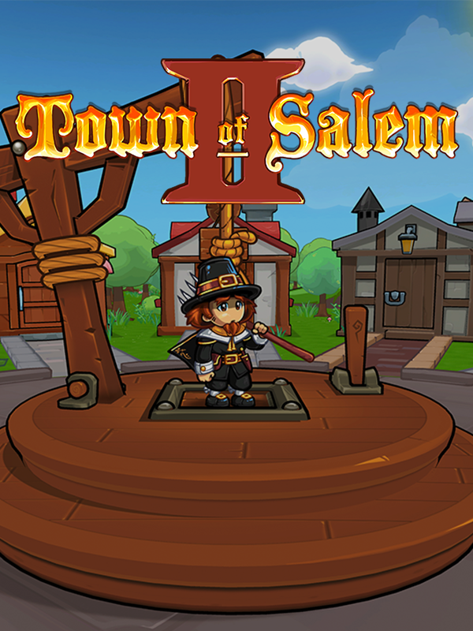

Town of Salem 2
Town of Salem 2
Details
|  | |
| Playtime | 5m 45s |
| Last Activity | Never |
| Added | 4/18/2024 18:32:38 |
| Modified | 4/18/2024 18:33:01 |
| Completion Status | Played |
| Library | Epic |
| Source | Epic |
| Platform | PC (Windows) |
| Release Date | 5/26/2023 |
| Community Score | |
| Critic Score | |
| User Score | |
| Genre | Action Casual Free to Play RPG Strategy |
| Developer | BlankMediaGames |
| Publisher | |
| Feature | Multiplayer |
| Links | Steam Official |
| Tag | |
Description
Welcome to Town of Salem, a gripping online multiplayer game of murder, deceit, and survival set in the quaint yet treacherous town of Salem. Immerse yourself in this thrilling social deduction adventure, where your strategy, wit, and ability to read others are your greatest assets. Can you uncover the truth before it's too late, or will deception lead you astray?

Features:
• Intricate Gameplay Mechanics: Engage in a complex universe with over 50 unique roles, each with its own objectives and abilities. From the protective Bodyguard to the deceptive Witch, choose your path wisely.
• Online Multiplayer Mayhem: Battle wits with up to 15 players in online matches. Forge alliances, betray friends, and navigate through lies to maintain your survival. Each game is a new mystery.
• Dynamic Social Interaction: Communicate with other players using the in-game chat feature. Persuade, deceive, and discuss strategies to uncover the roles of your fellow townsfolk or to conceal your own identity.
• Customization and Variety: Customize your experience with exclusive bundles, themes, and pets. Enjoy endless replayability with roles, game modes, and player-driven scenarios that keep the gameplay fresh and engaging.
• Strategic Depth and Team Play: No two games are the same. Your ability to adapt, strategize, and work with your teammates is crucial, whether you’re maintaining order or sowing chaos.

Immersive Experience:
Dive into the atmospheric setting of Salem, beautifully crafted with attention to detail. The charming visuals and thematic sound design enhance the suspense and intrigue, making every game an immersive experience.
Community and Events:
Join a thriving community of players from around the globe. Participate in seasonal events, special challenges, and community-driven projects to earn rewards and bragging rights.
Critical Acclaim:
Praised for its innovative gameplay and strategic depth, Town of Salem has captivated millions of players and critics alike. Experience the game that has redefined the social deduction genre.
Are You Ready to Uncover the Truth?

Download Town of Salem 2 now and test your ability to discern friend from foe. In this town, trust is a scarce commodity, and every decision could be your last. Welcome to Salem, where your survival depends on your ability to deceive or to see through the deception of others.
Download Now and Let the Mind Games Begin!
Features:
• Intricate Gameplay Mechanics: Engage in a complex universe with over 50 unique roles, each with its own objectives and abilities. From the protective Bodyguard to the deceptive Witch, choose your path wisely.
• Online Multiplayer Mayhem: Battle wits with up to 15 players in online matches. Forge alliances, betray friends, and navigate through lies to maintain your survival. Each game is a new mystery.
• Dynamic Social Interaction: Communicate with other players using the in-game chat feature. Persuade, deceive, and discuss strategies to uncover the roles of your fellow townsfolk or to conceal your own identity.
• Customization and Variety: Customize your experience with exclusive bundles, themes, and pets. Enjoy endless replayability with roles, game modes, and player-driven scenarios that keep the gameplay fresh and engaging.
• Strategic Depth and Team Play: No two games are the same. Your ability to adapt, strategize, and work with your teammates is crucial, whether you’re maintaining order or sowing chaos.
Immersive Experience:
Dive into the atmospheric setting of Salem, beautifully crafted with attention to detail. The charming visuals and thematic sound design enhance the suspense and intrigue, making every game an immersive experience.
Community and Events:
Join a thriving community of players from around the globe. Participate in seasonal events, special challenges, and community-driven projects to earn rewards and bragging rights.
Critical Acclaim:
Praised for its innovative gameplay and strategic depth, Town of Salem has captivated millions of players and critics alike. Experience the game that has redefined the social deduction genre.
Are You Ready to Uncover the Truth?
Download Town of Salem 2 now and test your ability to discern friend from foe. In this town, trust is a scarce commodity, and every decision could be your last. Welcome to Salem, where your survival depends on your ability to deceive or to see through the deception of others.
Download Now and Let the Mind Games Begin!